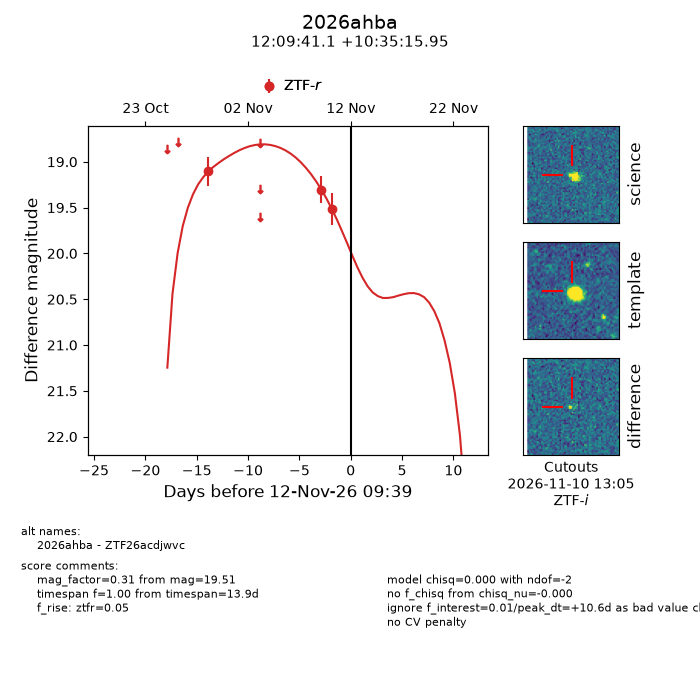
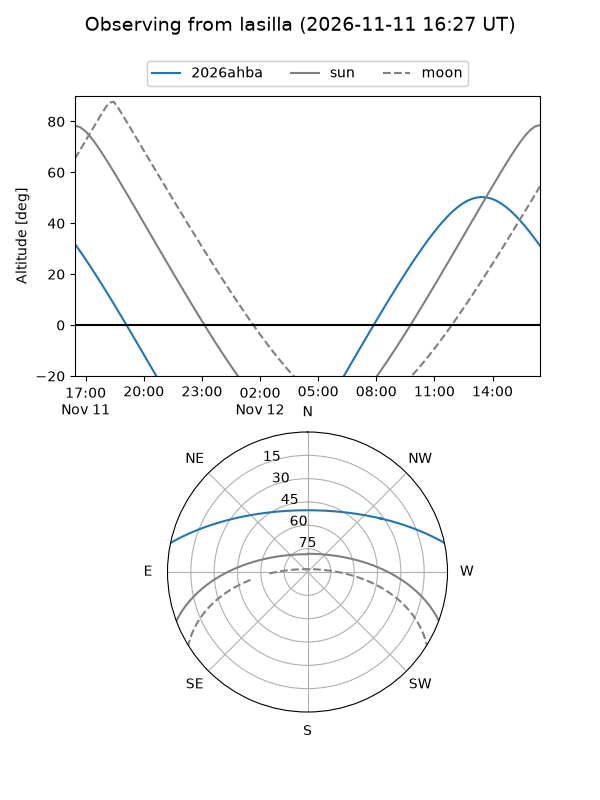
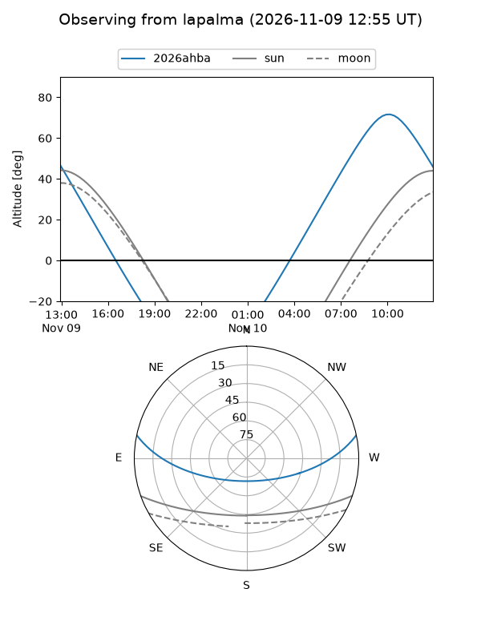
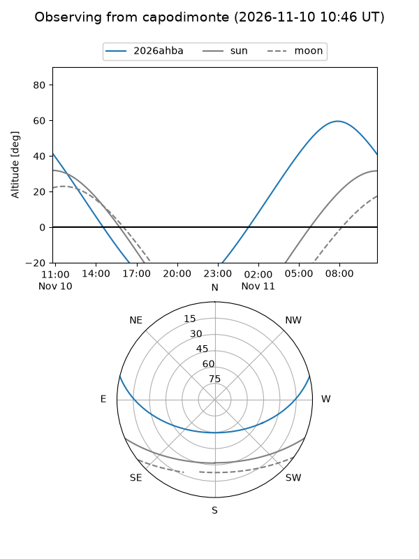
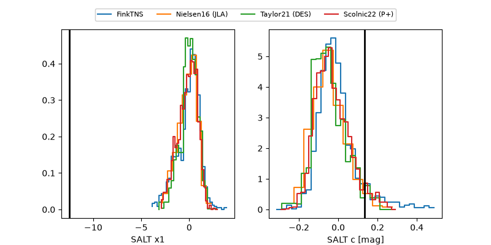

2026ahba
Target 2026ahba at 2026-11-12 09:45
Aliases and brokers:
FINK-ZTF: ztf.fink-portal.org/ZTF26acdjwvc
Lasair-ZTF: lasair-ztf.lsst.ac.uk/objects/ZTF26acdjwvc
ALeRCE-ZTF: alerce.online/object/ZTF26acdjwvc
YSE-PZ: ziggy.ucolick.org/yse/transient_detail/2026ahba
TNS name: wis-tns.org/object/2026ahba
Direct TNS query: direct search
alt names
ZTF26acdjwvc (ztf,fink_ztf)
2026ahba (tns,yse)
Coordinates:
equatorial (ra, dec) = 182.4213,+10.58776
equatorial (HMS+DMS) = 12:09:41.10,+10:35:15.95
galactic (l, b) = (270.2198,+70.75904)
Flags:
peak dt: +10.6
Photometry:
last ztfr=19.51
3 ztfr detections
Lightcurve

Visibility



Additional plots
